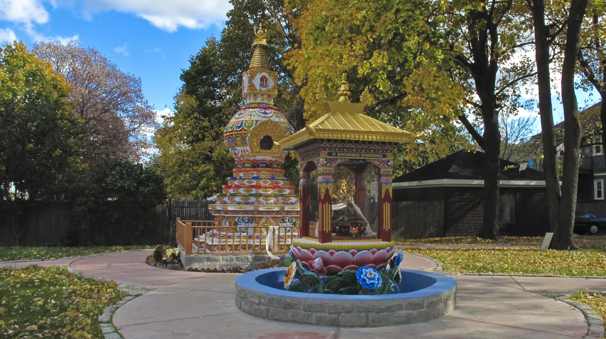
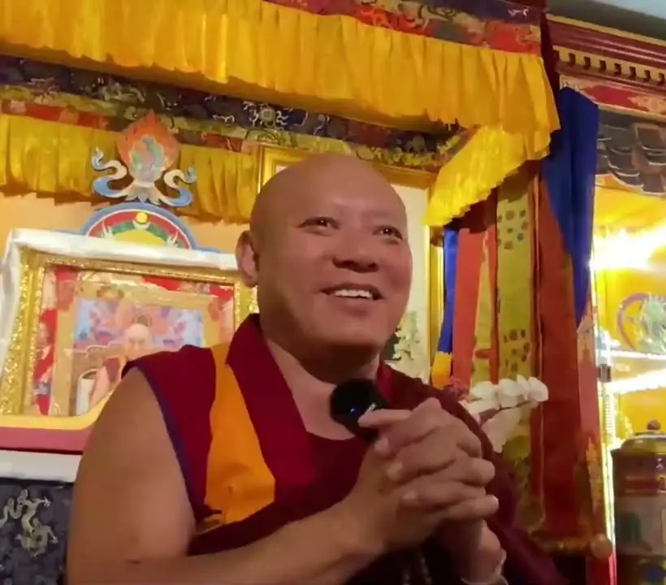
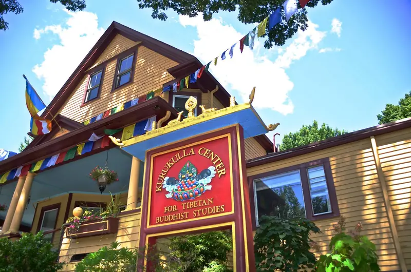
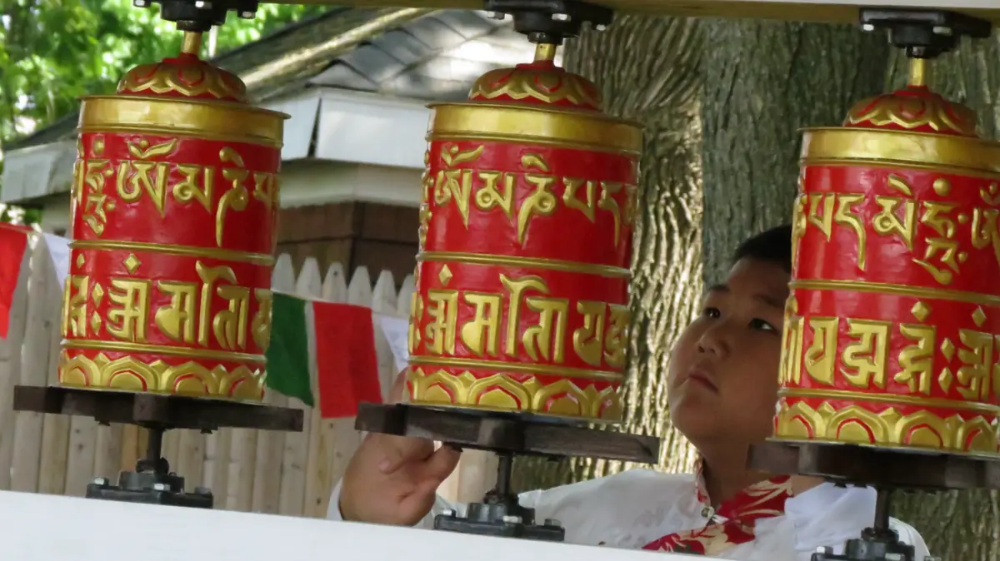
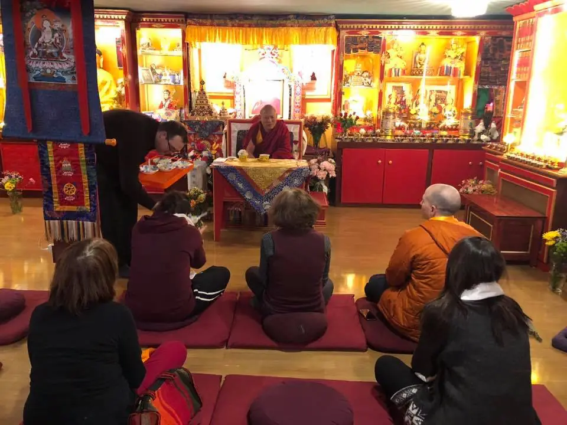

Study and practise Tibetan Buddhism, in Medford and online
Teachings with Geshe Tenley, classes for newcomers and pujas through the month. Join at the center or from home.

Photo: Nick Ribush, CC BY-SA 3.0
The next two weeks
Pick a day. Everything marked In person & online has a Zoom link on its page.
The month by the moon
Pujas are held on days of the Tibetan lunar calendar: Tara on the 8th, Guru Puja on the 10th and 25th, Medicine Buddha on the 15th. Scroll to turn the month to each one.
New to Buddhism? Start here
Classes are open to everyone. This is the path most people take at Kurukulla, and you can join at any point.
-
1
Saturdays 3 to 5 PM · Online
Introduction to Buddhism
“Your Life, Your Mind, Your Choice” with Seán González. Five Saturdays per module; drop in for one or all. Module 4, The Dharma and AI, starts 7 November.
About the course -
2
Tuesdays 7 PM · Free
Yoga & Meditation
Mixed-level yoga with Canan Ayar, ending in twenty minutes of guided meditation. Nothing to bring but comfortable clothes.
About the class -
3
FPMT foundation course
Discovering Buddhism
Fourteen mini-courses that bring study and practice together, for entry-level students.
See the modules -
4
Sundays 10 AM · Wednesdays 7 PM
Main program with Geshe Tenley
Shantideva's Guide to the Bodhisattva's Way of Life, Chapter 8, and the lojong text The Wheel of Sharp Weapons.
Current teachings -
5
Through the year
Practice together
Prostrations to the Thirty-Five Buddhas, pujas, the Eight Mahayana Precepts on Buddha days, and retreats.
Pujas and holy days

Resident teacher since 2010
Geshe Ngawang Tenley
Ordained in 1990, Geshe-la studied at Sera Jey Monastic University and received his geshe degree in 2008. He took full ordination from His Holiness the Dalai Lama and was appointed resident teacher on the advice of Lama Zopa Rinpoche.
He is known for his approachability and kindheartedness, and teaches twice a week.
- Sundays
- 10 AM to 12 PM
- Wednesdays
- 7 to 9 PM
- Join
- In person or Zoom

Spiritual director: Kyabje Lama Zopa Rinpoche. Kurukulla is part of the FPMT, founded by Lama Thubten Yeshe and Lama Zopa Rinpoche in the tradition of Lama Tsongkhapa.
Visit the center
68 Magoun Avenue
Medford, MA 02155
I-93 to exit 32. Route 60 east to Park Street, right on Park, then left on Magoun Avenue. The big yellow house is on the left; park in the driveway if there is room.
Orange Line to Wellington, then the 134 bus to Pembroke and Riverside and walk two blocks. From Medford Square (buses 94, 95, 96) it is a 10 to 15 minute walk.
Blue Line to State, change to the Orange Line outbound. A taxi from Logan takes about 20 minutes without traffic.



Keep the doors open
Kurukulla is run by volunteers and costs $8,000 to $9,000 a month to keep going. Gifts support Geshe Tenley, our translator Damchoe, the house and the stupa garden.
501(c)(3) nonprofit. Gifts are tax-deductible as the law allows.